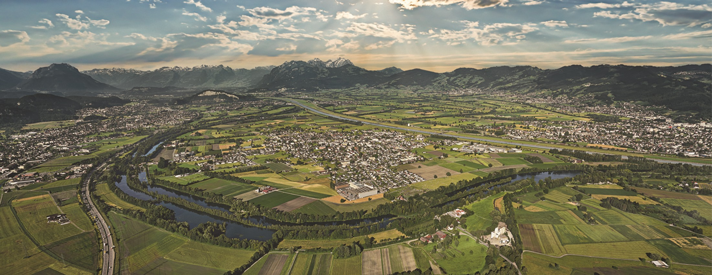

I was born and grew up in a small farmers town in Switzerland, in a valley bordering Liechtenstein. Shaped by traveling from a young age all across the globe, I set out to experience different cultures, studying for four years at Boston College in the U.S. and spending a semester at the Copenhagen Business School in Denmark. I am now pursuing my Masters in Financial Analysis at one of the most diverse business school in one of the most diverse cities in the world.